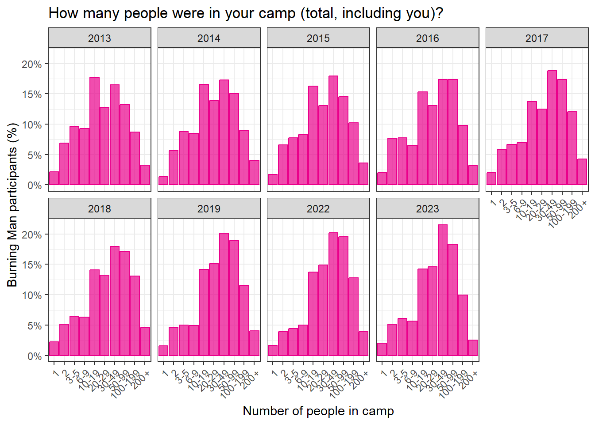

| 2013 | 2014 | 2015 | 2016 | 2017 | 2018 | 2019 | 2022 | 2023 | |
|---|---|---|---|---|---|---|---|---|---|
| 1 | 2.2% (1.9%, 2.5%) | 1.3% (1.1%, 1.5%) | 1.7% (1.4%, 2.1%) | 2.0% (1.6%, 2.5%) | 2.0% (1.7%, 2.4%) | 2.2% (1.8%, 2.6%) | 1.5% (1.2%, 1.9%) | 1.6% (1.4%, 2.0%) | 2.0% (1.6%, 2.5%) |
| 2 | 6.9% (6.4%, 7.4%) | 5.6% (5.2%, 6.1%) | 6.6% (6.0%, 7.2%) | 7.6% (6.9%, 8.4%) | 5.8% (5.3%, 6.5%) | 5.1% (4.6%, 5.7%) | 4.6% (4.1%, 5.2%) | 3.9% (3.5%, 4.4%) | 5.1% (4.5%, 5.8%) |
| 3-5 | 9.7% (9.1%, 10.3%) | 8.8% (8.2%, 9.3%) | 7.8% (7.2%, 8.4%) | 7.8% (7.0%, 8.6%) | 6.7% (6.0%, 7.4%) | 6.4% (5.8%, 7.1%) | 5.0% (4.4%, 5.6%) | 4.4% (3.9%, 4.9%) | 6.1% (5.4%, 6.9%) |
| 6-9 | 9.3% (8.7%, 9.8%) | 8.5% (7.9%, 9.0%) | 8.3% (7.6%, 8.9%) | 6.5% (5.9%, 7.3%) | 6.9% (6.3%, 7.6%) | 6.3% (5.7%, 6.9%) | 4.9% (4.4%, 5.5%) | 5.0% (4.5%, 5.6%) | 5.7% (5.0%, 6.4%) |
| 10-19 | 17.7% (16.9%, 18.5%) | 16.5% (15.8%, 17.3%) | 16.3% (15.4%, 17.2%) | 15.3% (14.4%, 16.3%) | 13.7% (12.9%, 14.6%) | 14.1% (13.2%, 14.9%) | 14.2% (13.3%, 15.1%) | 13.7% (12.9%, 14.6%) | 14.3% (13.3%, 15.3%) |
| 20-29 | 12.8% (12.1%, 13.4%) | 13.9% (13.2%, 14.6%) | 13.0% (12.3%, 13.9%) | 13.0% (12.2%, 14.0%) | 12.5% (11.7%, 13.3%) | 13.2% (12.4%, 14.0%) | 15.1% (14.2%, 16.0%) | 14.9% (14.1%, 15.8%) | 14.6% (13.6%, 15.6%) |
| 30-49 | 16.5% (15.8%, 17.3%) | 17.3% (16.6%, 18.1%) | 18.0% (17.1%, 18.9%) | 17.4% (16.4%, 18.5%) | 18.8% (17.8%, 19.8%) | 17.9% (17.0%, 18.9%) | 20.1% (19.1%, 21.2%) | 20.2% (19.3%, 21.2%) | 21.5% (20.3%, 22.8%) |
| 50-99 | 13.2% (12.6%, 13.9%) | 15.1% (14.4%, 15.8%) | 14.5% (13.7%, 15.4%) | 17.4% (16.4%, 18.4%) | 17.3% (16.4%, 18.3%) | 17.1% (16.2%, 18.1%) | 18.9% (17.9%, 19.9%) | 19.5% (18.6%, 20.5%) | 18.3% (17.2%, 19.5%) |
| 100-199 | 8.7% (8.2%, 9.2%) | 9.0% (8.4%, 9.6%) | 10.3% (9.6%, 11.0%) | 9.8% (9.0%, 10.7%) | 12.1% (11.2%, 13.0%) | 13.1% (12.3%, 13.9%) | 11.6% (10.8%, 12.4%) | 12.8% (12.0%, 13.6%) | 9.9% (9.1%, 10.9%) |
| 200+ | 3.2% (2.9%, 3.6%) | 4.0% (3.6%, 4.4%) | 3.6% (3.2%, 4.1%) | 3.2% (2.7%, 3.6%) | 4.2% (3.7%, 4.8%) | 4.6% (4.1%, 5.1%) | 4.1% (3.6%, 4.6%) | 3.9% (3.5%, 4.4%) | 2.5% (2.1%, 3.0%) |